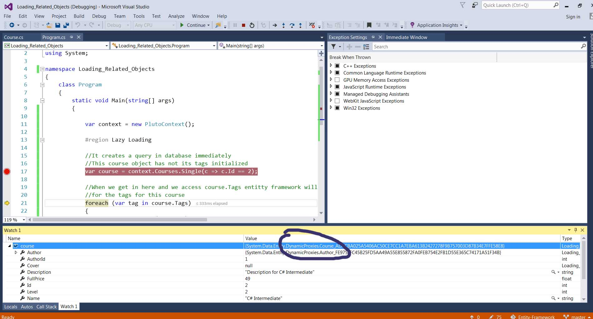
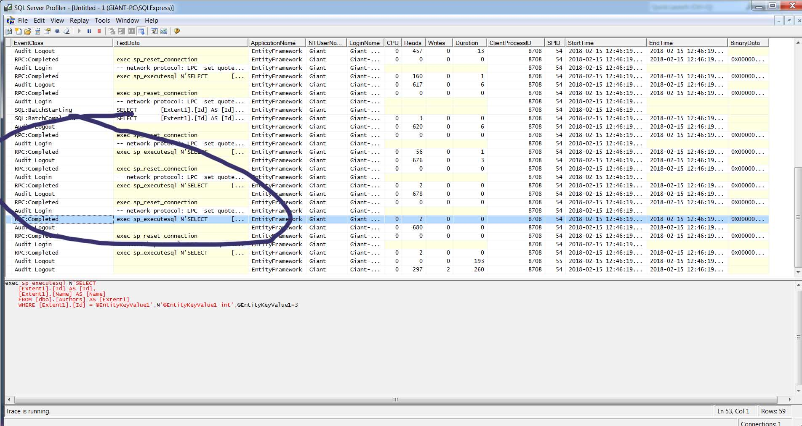
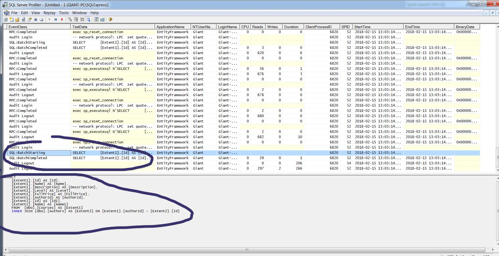

Any singleton methods like Single, SingleOrDefault, First, FirstOrDefault, Count, Max, Average cause an immediate query execution.
#region Lazy Loading
//It creates a query in database immediately
//This course object has not its tags initialized
var course = context.Courses.Single(c => c.Id == 2);
//When we get in here and we access course.Tags entitty framework will send another query
//for the tags for this course
foreach (var tag in course.Tags)
{
Console.WriteLine(tag.Name);
}
#endregion
So related objects are not loaded immediately. They are loaded on demand when we access them.
In our project in Course class we have a virtual property Tags. At runtime entity framework creates a new class that derives from Course. It's called CourseProxy. It looks exactly like Course class but it has has some additional behavior.
public class Course
{
public Course()
{
Tags = new HashSet();
}
public int Id { get; set; }
public string Name { get; set; }
public string Description { get; set; }
public int Level { get; set; }
public float FullPrice { get; set; }
public virtual Author Author { get; set; }
public int AuthorId { get; set; }
public virtual ICollection Tags { get; set; }
public Cover Cover { get; set; }
}
As we see below in visual studio debug mode we see a the value of course is a proxy created by entity framework. 
public PlutoContext():base("name=PlutoContext"){this.Configuration.LazyLoadingEnabled = false;}
While lazy loading might good for some solutions to be optimized and be more responsive if it's used inappropriately it can lead to N + 1 problem. In order to get N entities and their related entities we'll end up with N + 1 queries.
//We have one query here
var courses2 = context.Courses.ToList();
//Here though for Author.Name enity framework is going to run a seperate query to get the Author for
//tha course
//So we assume we have N courses we will get N + 1(which is the first query above)
foreach (var course in courses2)
{
Console.WriteLine("{0} by {1}", course.Name, course.Author.Name);
}
Console.WriteLine();
And if we see our SQL profiler we will see how many queries we will have. 
Eager Loading is the opposite of lazy loading. Instead of loading the related entities on demand we will load them up front to prevent additional queries to the database.
//Include has two overloads(one takes a string and the other a lambda expression)
//With this query entity framework will join the courses table with authors table
//to eager load all the courses and their authors
//Wrong practices
//var courses3 = context.Courses.Include("Author").ToList();
//Correct with lambda expression
var courses3 = context.Courses.Include(c => c.Author).ToList();
foreach (var course in courses3)
{
Console.WriteLine("{0} by {1}", course.Name, course.Author.Name);
}
Unlike lazy loading we will not have so many queries to get courses and their authors. 
If we have single properties we just add chain them. If though we have a collection we have to use Select.
//Multiple Levels
//Single properties
context.Courses.Include(CannotUnloadAppDomainException => CannotUnloadAppDomainException.Author.Address);
//For collection properties
context.Courses.Include(a => a.Tags).Select(t => t.Moderator);
Similar to lazy loading eager loading can be good and bad.
If we use many Includes the generated queries will get more and more complex. Also we will store many objects in memory that are not needed straight away.
With Explicit Loading we tell entity framework exactly what should be loaded ahead of time. The differences between Eager Loading and Explicit Loading is that Eager Loading will :
Explicit loading have some benefits since instead of sending a big query to the database we will have multiple round trips. Another advantage is that you can apply filters to the related objects.
//First query get an author with id 1
var author = context.Authors.Single(a => a.Id == 1);
//MSDN way
//You have to remember more of DbContext API
//This only works for single entries and NOT a list of objects
context.Entry(author).Collection(a => a.Courses).Query().Where(c => c.FullPrice == 0).Load();
//Better way
context.Courses.Where(c => c.AuthorId == author.Id && c.FullPrice == 0).Load();
SELECT *FROM Courses WHERE AuthorID IN(1,2,3,4)
And the above in Entity
var authors2 = context.Authors.ToList();
//Select all authors ids
var authorIds= authors2.Select(a => a.Id);
context.Courses.Where(c => authorIds.Contains(c.AuthorId) && c.FullPrice == 0);